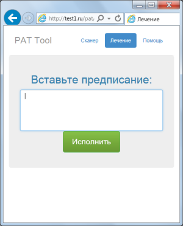

Манул
Краткая справка по скрипту Манул.
Описание скрипта
Манул – это набор скриптов для сканирования сайта и поиска вирусов, хакерских шеллов и другого вредоносного кода. Манул открывается в браузере и выполняет сканирование содержимого каталогов сайта.
Результатом работы Манула является отчет в XML формате, запакованный в ZIP архив. В отчете содержится список всех файлов и каталогов с атрибутами, а также отметки о наличие вредоносного кода в файле.
Отчет о сканировании можно либо проанализировать самостоятельно с помощью специального анализатора логов Манула, либо передать на анализ специалисту.
Основные экраны:
Аутентификация:

Сканирование:
Выполнения лечащего предписания:

Принцип работы
При первом запуске скрипта необходимо придумать сложный пароль, содержащий заглавные и маленькие латинские буквы, цифры и спецсимволы. Пароль должен быть вида “Olydxm753@”. При последующих запусках скрипта данный пароль будет запрашиваться для авторизации.
Благодаря архитектуре скрипта Манул, основанной на технологии ajax, он выполняет сканирование сервера поэтапно. Данный подход делает возможным непрерывное сканирование объемного сайта с десятками тысяч скриптов и ограничением по времени выполнения скриптов до 30 секунд в настройках хостинга.
Настройки
Если у вас на хостинге запрещена интенсивная отправка запросов или ограничение на потребление CPU, вы можете задать необходимый интервал для запросов в разделе ”Настройки”.
Кроме того скрипт может работать в двух режимах: только сканирование файлов или сканирование файлов и поиск вредоносных скриптов. Данная опция также задается в разделе “Настройки”.
Начало работы
Для начала работы необходимо нажать на кнопку “Начать сканирование” и подождать , пока скрипт проверит содержимое каталога сайта. Сканирование выполняется в два этапа. Первый этап - это формирование структуры сайта (списка файлов и папок). Второй этап – непосредственно сканирование. Прогресс сканирования отображается в виде индикатора в центральной части страницы.
В случае успешного сканирования сайта вам будет предложено скачать файл scan_log.zip в корневом каталоге сайта. Внимание! Данный файл необходимо удалить сразу после загрузки.
Ошибки
В случае ошибки на странице будет выведен текст. Отправьте данный текст или скриншот страницы в техническую поддержку скрипта с кратким описанием выполненных действий, которые привели к ошибке.